1Scalp
頭皮
頭皮
SHAMPOO
運動強健洗髮露
解放頭皮，讓運動後的悶熱汗臭 OUT!
針對油性髮質、訓練後頭皮悶熱設計。
- 高麗人蔘萃取Korean Ginseng
- 何首烏萃取Polygonum Multiflorum
- 薑根萃取Ginger Root
Design for Athlete · Post-Training System
頭皮的汗脂、髮絲的損耗、身上的黏膩。PLUS ONE 用三個步驟，把一場硬仗留下的東西全部 OUT!
看三步驟怎麼用 →The Problem
一般的洗髮精、沐浴乳是為日常設計的。長時間的汗水、日曬、風吹和泳池氯水，需要不一樣的清潔與修護。
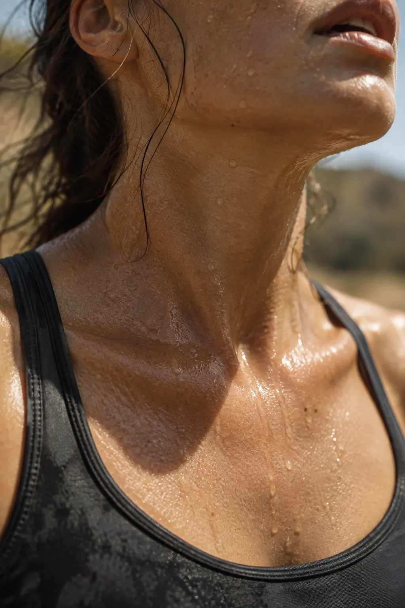
一般沐浴乳無法深入毛孔，運動後的汗脂殘留讓肌膚持續悶熱不適。
沐浴露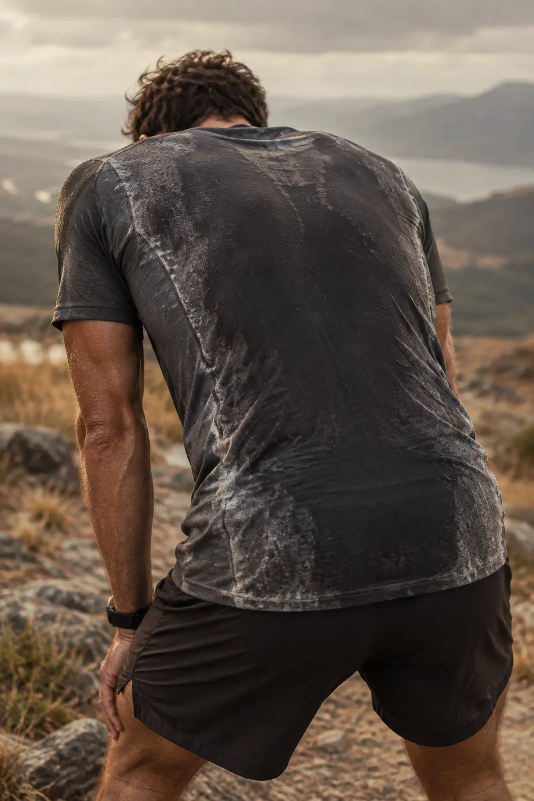
即使洗完澡，衣服一穿上又開始散發異味。
洗髮露＋沐浴露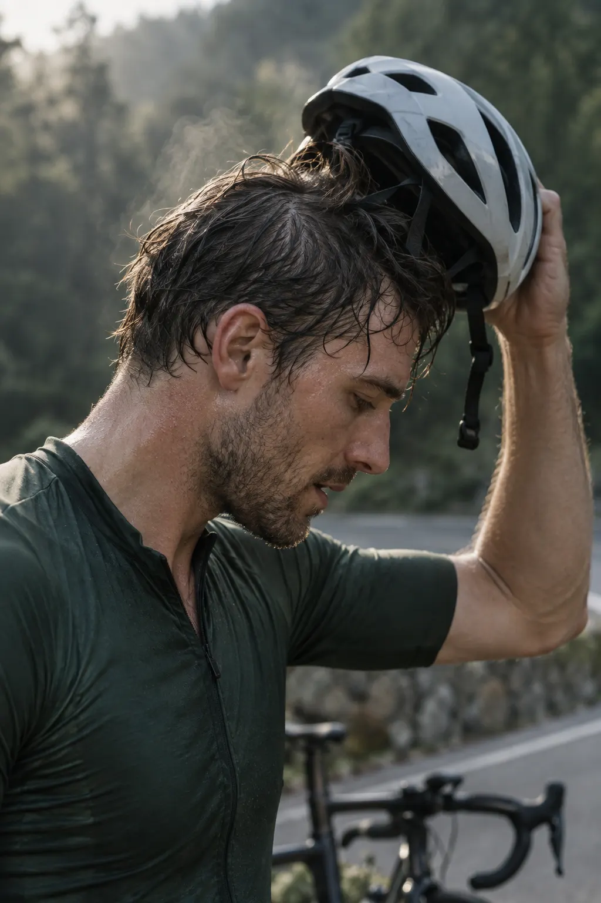
長時間戴安全帽或頭巾運動，頭皮被汗水浸泡。
洗髮露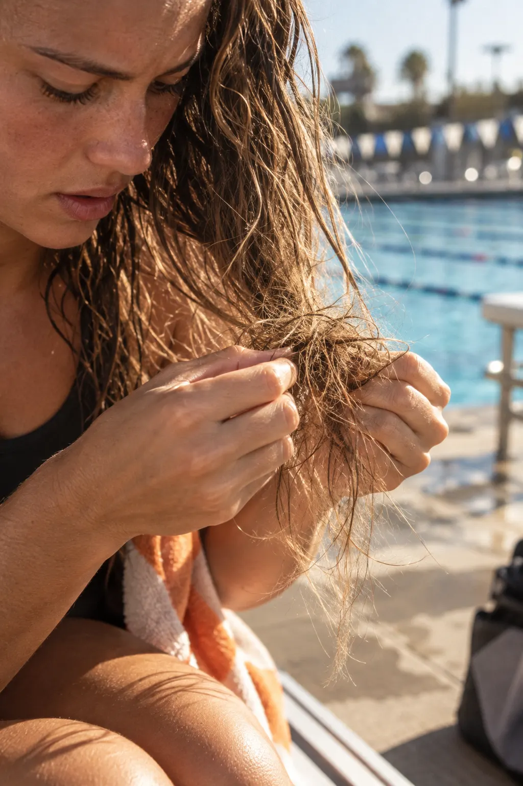
長距離騎乘的強風、烈日下的馬拉松、泳池的氯水，讓髮絲又乾又打結。
護髮乳OUT! Technology
從配方到體驗，每一個環節都圍繞著「徹底清除」這個目標：洗去引起異味的汗垢與髒污，而不是用濃重香味掩蓋。
深入毛孔，清除汗水與油脂殘留，讓皮膚感受極致清爽。
深層淨化，洗去異味來源，而不是用香味掩蓋。
沖水即淨，不留下不必要的滑感。清潔感是真的，乾淨感是真的。
快速解結、深層滋養且易沖洗，修護被強風、烈日與氯水帶走的水分。
The System · 賽後三步驟
三瓶的顏色就是它們的分工：墨綠清頭皮、奶白橘修護髮絲、琥珀洗淨身體。在浴室裡不用看字，伸手就拿得對。
運動強健洗髮露
解放頭皮，讓運動後的悶熱汗臭 OUT!
針對油性髮質、訓練後頭皮悶熱設計。
運動員極效修護護髮乳
強風、烈日、泳池氯水造成的乾澀毛躁 OUT!
快速解結、深層滋養且易沖洗。
運動深層沐浴露
深層清潔，毛孔汗脂污垢 OUT!
適合一般至油性肌膚、訓練後使用。
護髮乳抹上後要停留 3–5 分鐘，剛好拿來洗身體。三步驟不會讓你在浴室多待一分鐘。
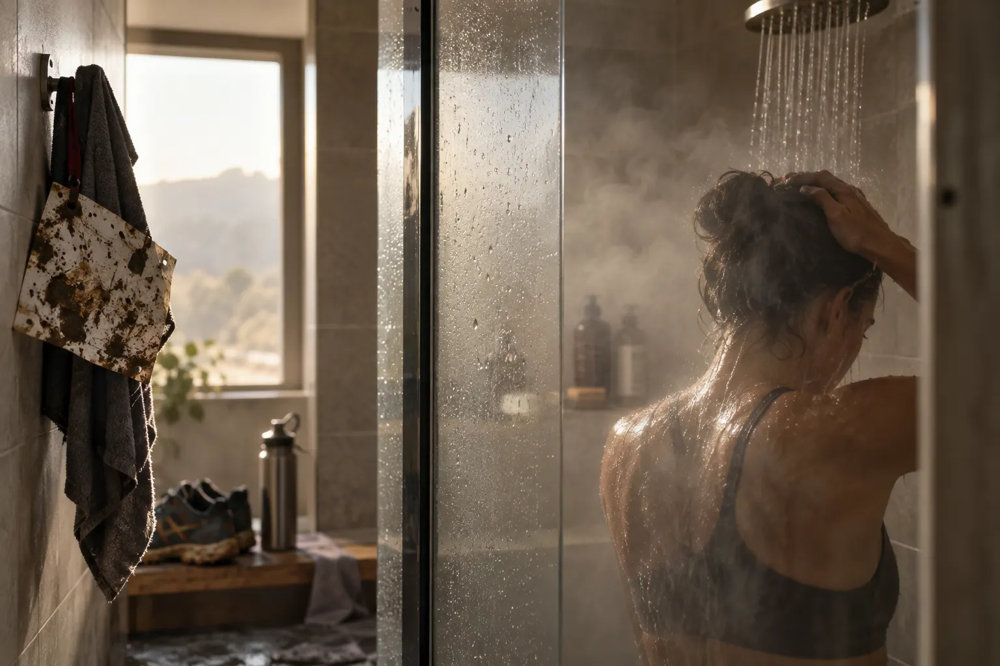
RESET · 核心訴求
不只洗澡，
是回到可以再出發的狀態。
PLUS ONE 是針對長時間戶外運動設計的深層潔淨系列。不只洗淨，而是幫助你維持肌膚油水平衡，準備好再次出發。洗髮、護髮與沐浴，都是運動裝備的一部分。
Formulated for athletes who push further.
Built for what comes after.
Target Audience
無論是 42K 的馬拉松、226K 的超級鐵人三項，還是一場週末的越野跑，你的身體承受了極限的考驗，它值得最專業的清潔。PLUS ONE 與你並肩，從起跑線到終點線之後。
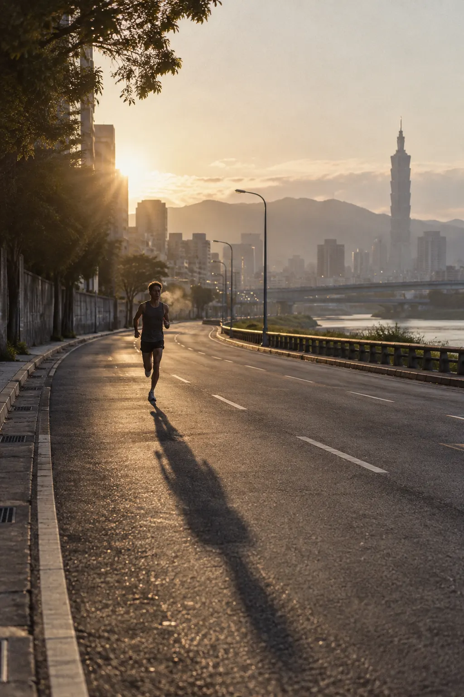
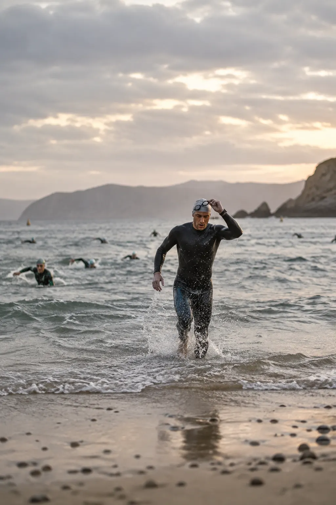
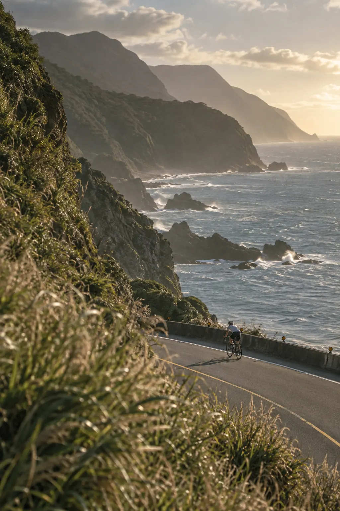
Packaging · 包裝設計
每個設計決策，都為了訓練後的那一刻。三瓶用同一套瓶型，只靠顏色區分。
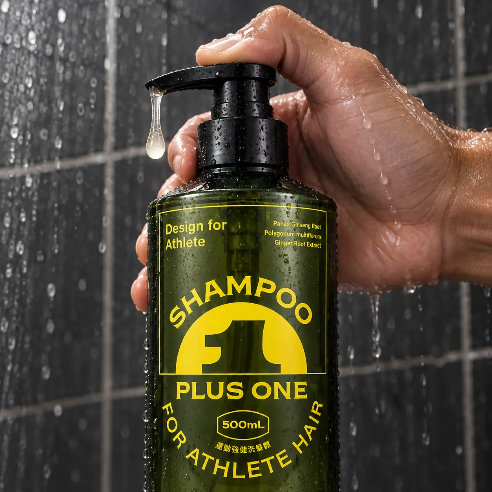
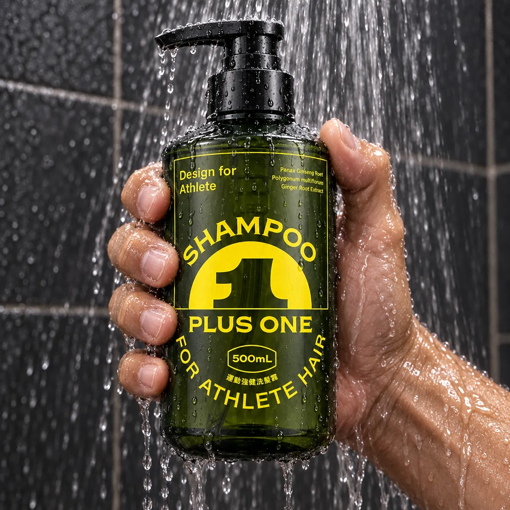
單手即可操作，訓練後雙手沾水也能輕鬆取用。
特殊防滑紋路設計，濕手也能穩握，不滑落。
針對高頻使用者設計，每天訓練也不怕快速用完。
100% 台灣生產，嚴格品質管控，機能導向配方。
Athlete Reviews
來自長期訓練、參賽的使用者。
每次訓練結束後，這是我第一個拿的東西。洗得掉訓練味、頭皮會呼吸，沖水後乾淨不殘留。更像一件運動清潔工具，不是一般的沐浴產品。
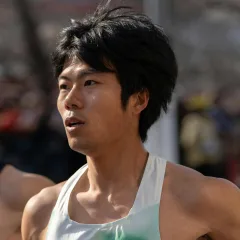
比賽後全身又黏又臭，以前只能用普通沐浴乳勉強撐過。現在換了 PLUS ONE，真的感覺毛孔被清乾淨，肌膚沒有以前訓練後的那種緊繃不適感。
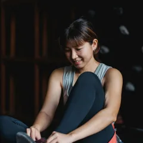
重訓後頭皮特別悶，以前洗完還是會癢。用了這款之後頭皮呼吸順多了，也不會乾燥脫屑。配方乾淨，用起來很安心。

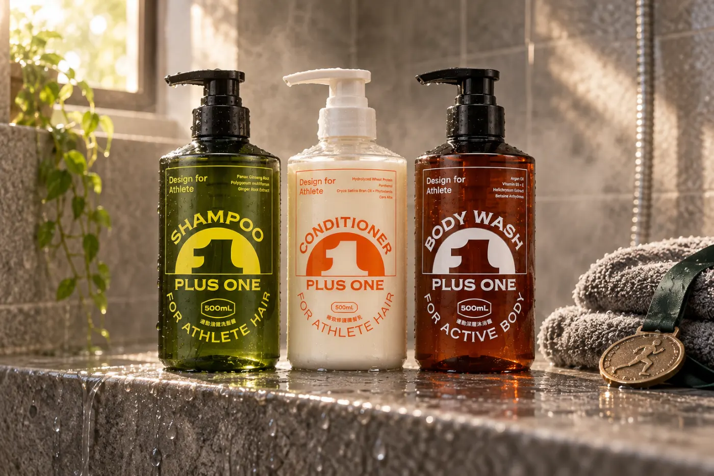